Hi! Since 2016, working and studying across various fields of audio from sound design and foley work for performances, exhibitions and film, to music creation, multichannel and spatial audio compositions, and DIY-built sound machines.
GET IN TOUCH →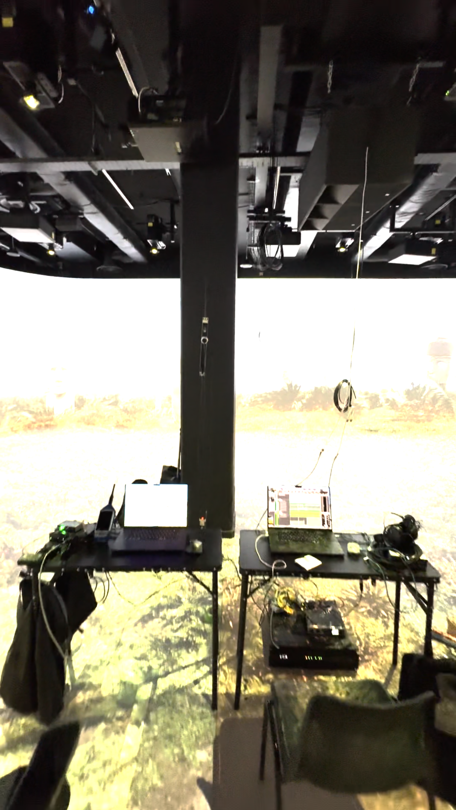
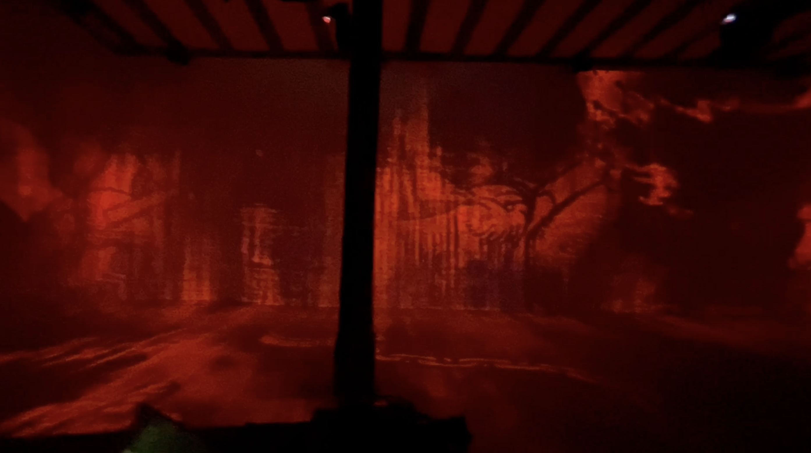
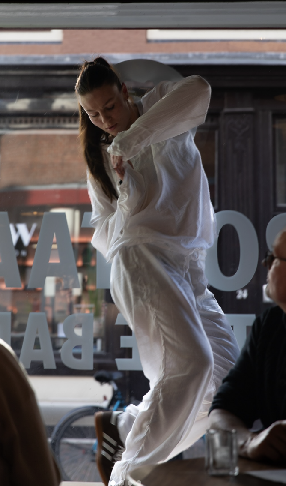
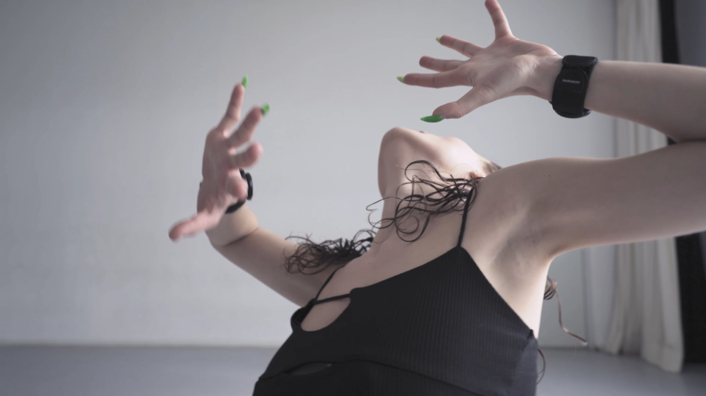
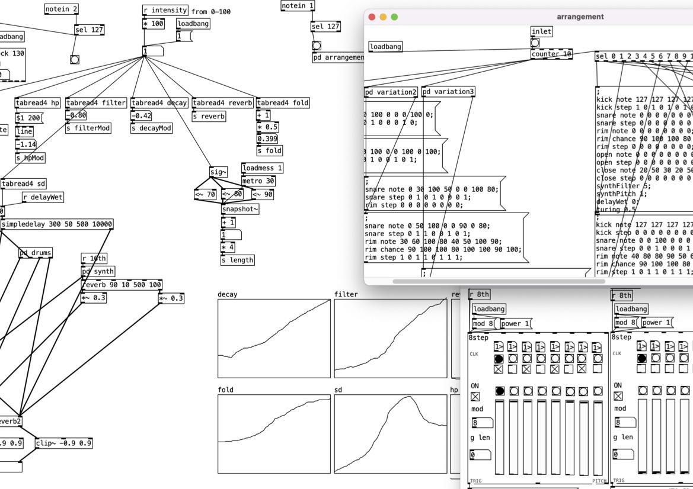
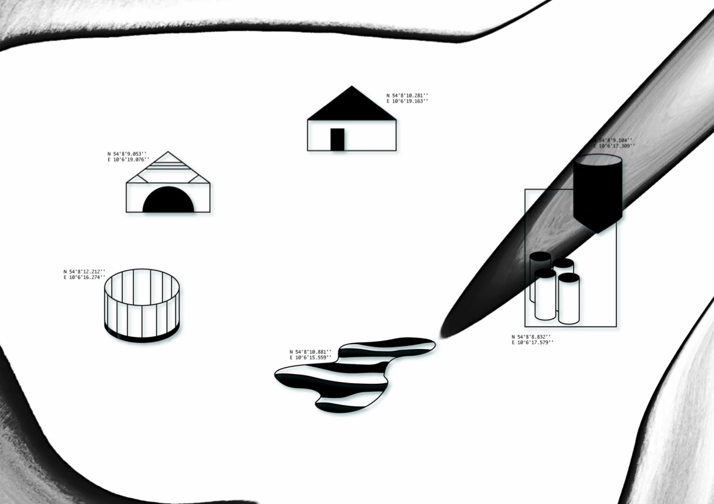
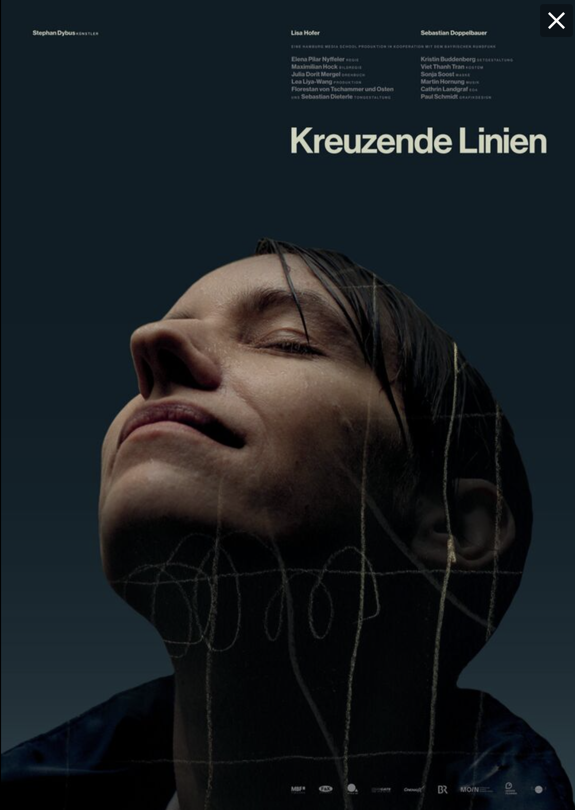
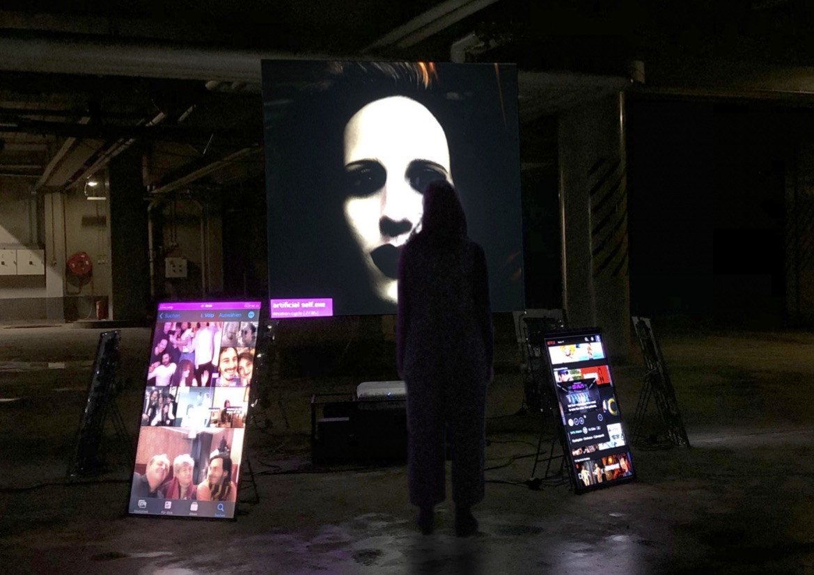
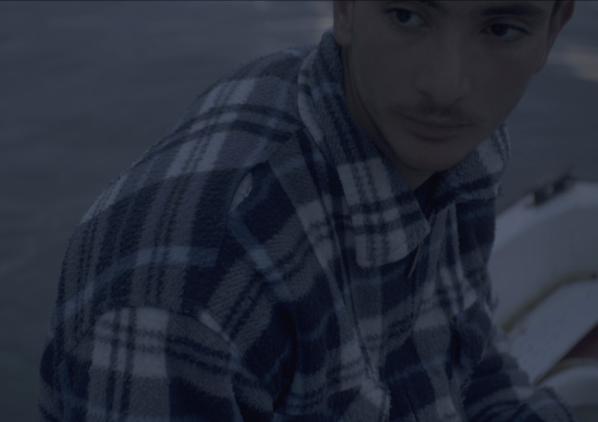
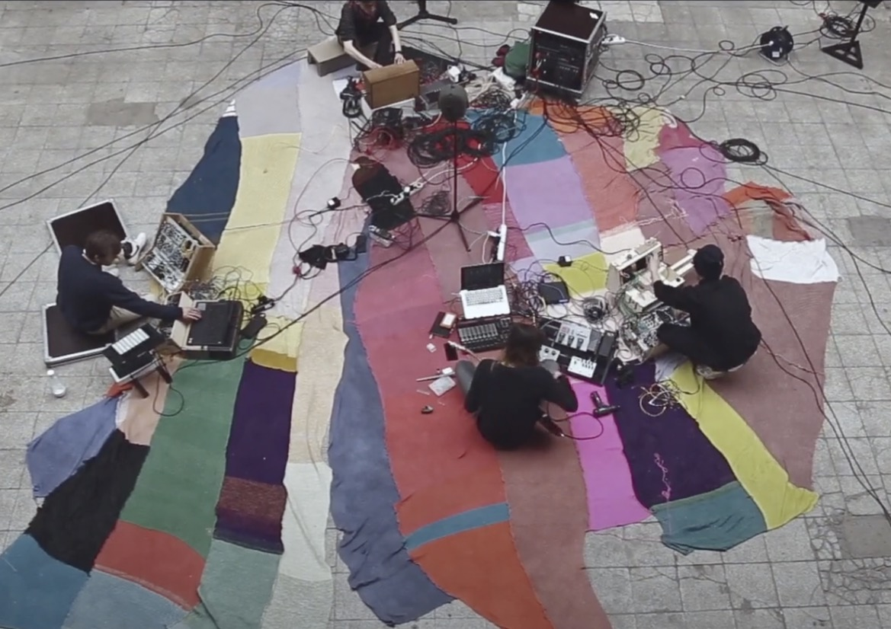
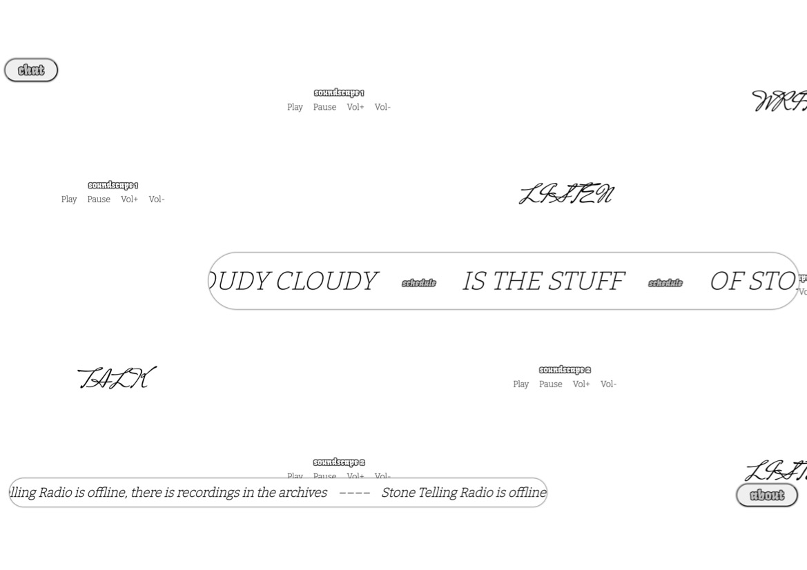
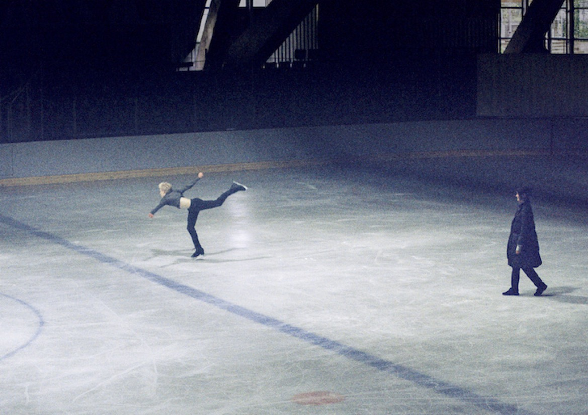
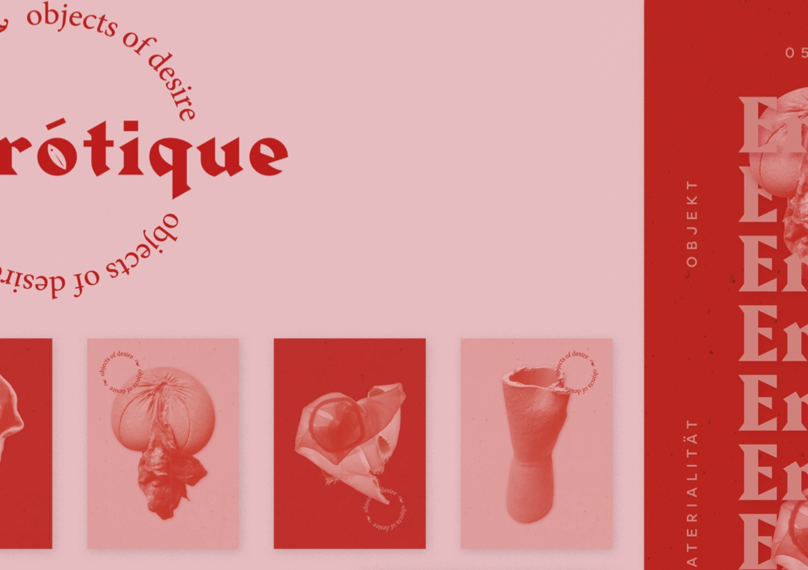
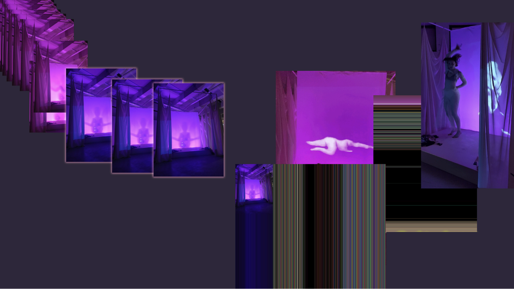